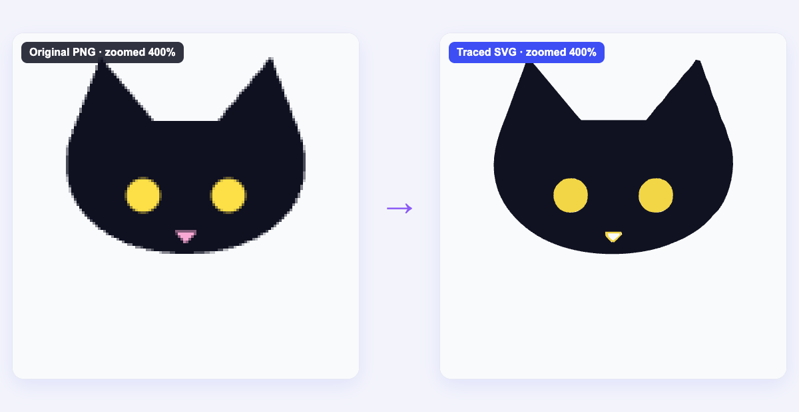

How to Convert PNG to SVG (Free, 3 Methods)
The fastest free way to convert PNG to SVG is an in-browser tracer: upload the PNG, check the colours, download the SVG. For tracing plus editing in one app, use Inkscape's free Trace Bitmap. If you already pay for Adobe, Illustrator's Image Trace works well. Renaming a .png file to .svg does not convert it — the pixels must be traced into vector paths.
Converting a PNG to SVG turns a pixel image into scalable vector paths you can resize, recolour, cut and print at any size. There are many tools that claim to do it, but they work very differently — and some simply wrap your PNG inside an SVG file without vectorizing anything. This guide shows three methods that genuinely trace your image, compares them, and explains the settings that matter.
Can you just rename a PNG to SVG?
No — renaming a .png file to .svg does not convert it, because the file still contains pixel data, not vector paths. Some converters also "cheat" by embedding the PNG inside an SVG container. The file has an .svg extension, but it is still a raster image that blurs when enlarged and cannot be cut by a Cricut or laser. A real conversion traces the pixels into shapes. You can check by opening the SVG in a text editor: real vectors contain <path> elements, while fake ones contain a long data:image/png;base64 string.
Method comparison
| Feature | 1. Online tracer | 2. Inkscape | 3. Illustrator |
|---|---|---|---|
| Cost | Free | Free | Subscription |
| Install | None | Desktop app | Desktop app |
| Speed | Seconds | A few minutes | A few minutes |
| Colour control | Auto palette, 1–32 colours, recolour, remove | Number of scans, manual | Presets and palette options |
| Editing afterwards | In any vector editor | Built in | Built in |
| Privacy | Runs in browser (ours) | Local | Local |
| Best for | Quick, clean results | Tracing plus editing for free | Professional design workflows |
Method 1: Use a free online PNG to SVG converter
An online tracer is the quickest method: upload the PNG, review the automatic settings and download the SVG. Our PNG to SVG converter runs entirely in your browser, so the image is never uploaded.
- Open the converter and drop your PNG into the upload area (or paste it with Ctrl+V).
- The image type — logo, photograph, sketch or silhouette — is detected automatically and suitable settings are applied.
- Check the palette. Choose a suggested palette or set the number of colours to match the image. Click × on any colour to remove it, such as a white background.
- Open Advanced settings if needed to adjust detail, noise smoothing, speckle removal and corner angle.
- Compare the original and the SVG side by side, then click Download SVG or Copy SVG.
Specialised versions are available for Cricut cut files, laser cutting, logos and transparent PNGs.

Method 2: Convert PNG to SVG in Inkscape (free)
Inkscape's Trace Bitmap tool vectorizes a PNG inside a free desktop editor, so you can trace and edit in one place.
- Install Inkscape from inkscape.org and open it.
- Choose File → Import and select your PNG (choose "Embed" when asked).
- Select the image and open Path → Trace Bitmap (Shift+Alt+B).
- For a one-colour result, choose Single scan with Brightness cutoff. For colour, choose Multiple scans → Colors and set the number of scans (colours).
- Tick Smooth and Remove background where offered, adjust Speckles and Smooth corners, then click Apply.
- Move the traced result aside and delete the original image underneath.
- Save with File → Save As → Plain SVG.
Inkscape gives fine control but requires more steps, and colour results often need manual clean-up. See How to Edit SVG Files in Inkscape for editing tips.
Method 3: Convert PNG to SVG in Adobe Illustrator
Illustrator's Image Trace converts a placed PNG into vector paths using presets, then Expand turns the trace into editable shapes.
- Open Illustrator and choose File → Place to add your PNG.
- Select it and open Window → Image Trace.
- Pick a preset such as Black and White Logo, 3 Colors, 16 Colors or High Fidelity Photo.
- Adjust Colors, Paths, Corners and Noise in the panel; tick Ignore White to drop a white background.
- Click Expand in the Control bar to convert the trace into editable paths.
- Use File → Export → Export As and choose SVG.
Which settings give the cleanest SVG?
Whatever method you use, clean results come from the right colour count, enough detail for small features and enough speckle removal to delete noise.
- Colours: match what you can see — 2 for line art, 2–6 for logos, 12–24 for photos.
- Detail: higher for small text and thin lines; lower for simpler, smaller files.
- Speckle removal: higher for JPGs, scans and noisy images.
- Corners: sharper for text and geometric shapes; smoother for organic shapes.
Read Best Settings for Clean SVG Tracing for a detailed guide.
How to prepare a PNG for conversion
- Use the largest version available — 800–2,000 pixels across is ideal.
- Crop away anything that is not part of the artwork.
- Prefer a transparent or plain background.
- Increase contrast for faded scans and drawings.
More in How to Prepare an Image for Tracing.
Which method should you choose?
Choose the online tracer for speed and privacy, Inkscape if you also need a free editor, and Illustrator if you already work in Adobe's apps. In practice many people combine them: trace in the browser to get a clean starting point with the right colours, then open the SVG in Inkscape or Figma to retype text or rebuild simple shapes. That workflow is fast, free and produces professional results.
How do you check that the SVG is good?
Zoom in to 400% or more and look at curves, corners, thin lines and small text, then check the number of paths and the file size.
- Curves should be smooth, not stepped or wobbly.
- Corners on text and geometric shapes should be sharp.
- Thin lines should be continuous, not broken into dashes.
- Edges should have no halo of in-between colours.
- Path count should be reasonable — a simple logo usually needs dozens of paths, not thousands.
If something looks off, adjust the colour count first, then speckle removal and detail, and trace again — with an in-browser tool each attempt takes seconds.
Frequently asked questions
What is the easiest way to convert PNG to SVG?
An in-browser converter: upload, check the colours, download. It takes under a minute and needs no software.
Does converting PNG to SVG keep transparency?
With our converter and with Inkscape's Remove background option, yes. In Illustrator, tick Ignore White to drop a white background.
Can I convert a PNG photo to SVG?
Yes, but the result is stylised vector art with flat colour regions, not a photographic copy. Use 12–24 colours for a balanced result. See Photo to Vector Art.
Is online conversion safe?
It depends on the tool. Many upload your file to a server. Ours traces the image locally in your browser, so it never leaves your device.
Can I convert SVG back to PNG?
Yes, with the SVG to PNG converter, at any size you choose.
Summary
For speed and simplicity, use a free online tracer. For tracing and editing in one free app, use Inkscape. If you already work in Illustrator, Image Trace is a solid option. Whichever you choose, make sure the result is a true vector — paths, not an embedded PNG.
We build free, privacy-first tools for converting images to vectors and write practical guides for designers, crafters and developers. Published November 21, 2026.
Ready to try it? Convert your image to SVG for free.
Open the converter